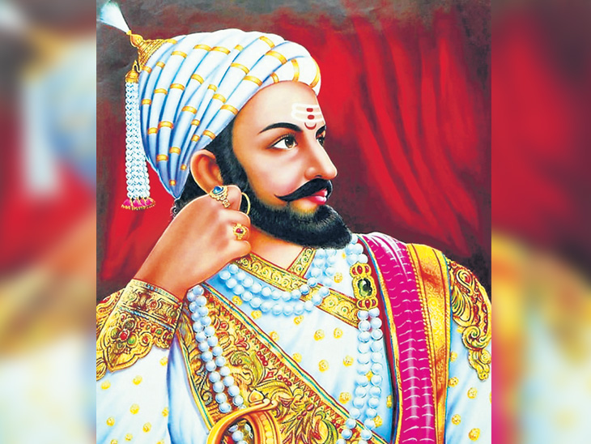

Chatrapati Shivaji Maharaj Memorial

The height of the monument shall not be less than be 312 feet. The statue of Shivaji Maharaj is proposed as an Equestrian Statue. The surrounding area will have beautifully landscaped gardens and open space to accommodate 3000 persons at a given time. A state of the art museum is proposed to be built at the site of the monument containing some of artifacts used by Chatrapati Shivaji Maharaj and extracts of his inspirational writings. It is proposed to have an amphitheatre and auditoria of various sizes as per requirement with back stage facilities. It is proposed to have an exhibition gallery in which life panorama of Chatrapati Shivaji Maharaj will be displayed by artistic murals. This proposal will have marine aquarium with sound and light shows that will depiet important events in his life and forts which constructed by him. It is proposed to have common facility such as Reception, Cafeteria, Lavatories, Book stalls etc for the visitors. It is proposed to have a viewing gallery at the apex of Statue. It is proposed to have adequate security installations with latest technology. It is proposed to have Efficient clean water supply & sanitary fittings and fixtures with appropriate services. Energy Efficient electrical fittings & fixtures. Possible use of solar energy. Storm water utilization Renewable energy conservation Waste water treatment plant Water recycle & reuse (including rain water) Optimise design to reduce conventional energy, water, etc It is proposed to have adequate number of jetties to facilitate transport from marine drive and Gateway of India etc. It is Proposed to have adequate office facilities for support staff. It is Proposed to have large open space, landscape, paved area and provision of heliports (for atleast 3 helicopters).
Shivaji Maharaj is one of the great national heroes of India. He created an independent and sovereign state in Maharashtra which was based on justice, welfare of the people and tolerance to all faiths. The aims, objectives and Rajnitee of the Maratha Swaraj under Chhatrapati Shivaji provided a new direction to contemporary politics of India. In course of time, his movement assumed, the form of an all-India struggle; a struggle which was to change the political map of India. Shivaji Maharaj was born at the Shivneri fort near Junnar in Pune district on 19th February 1630. Shivaj s mother, Jijabai was the daughter of Lakhuji Jadhavrao of Sindkhed. His father Shahajiraje Bhosale was a prominent sardar in the Deccan. At the time of Shivaji Maharaj’s birth, most of the territory in Maharashtra was under the possession of the Nizamshah of Ahmednagar and the Adilshah of Bijapur. In the coastal belt of Konkan there were two sea powers, the Portuguese and the Siddi. The British and the Dutch who were engaged in expanding their trade also had their factories on the coast. The Mughals, since the period of Emperor Akbar 1 wanted to expand their power in the South. The Mughals launched a campaign to conquer the Nizamshahi Kingdom. The Adilshah of Bijapur allied with the Mughals in this campaign. Shahahajiraje tried to save the Nizamshahi, but he could not withstand the combined might of the Mughals and the Adilshahi. The Nizamshahi kingdom came to an end in A.D. 1636. Thereafter Shahajiraje became a sardar of the Adilshah of Bijapur and was posted in Karnataka. The region comprising Pune, Supe, Indapur and Chakan parganas located between the Bhima and Nira rivers which was vested in Shahajiraje as a jagir was continued by the Adilshah. Shahaijiraje was also assigned a jagir of Banglore. Veermata Jijabai and Shivajiraje, stayed for a few years with Shahajiraje at Banglore till Shivajiraje was twelve years old. Shahajiraje entrusted the administration of the Pune jagir to Shivajiraje and Veermata Jijabai. Shivajiraje grew up amidst the hills and valleys of Pune region under the guidance of his mother Jijabai. 